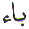
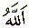
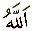

The Arabic letter
Ba (  ) is equivalent to the letter 'B'
in the English alphabet. It is the second letter in Arabic. Ba
in Arabic numerology which is known as Abjad, has the value of
2. This article is about the spiritual meaning of the letter Ba.
) is equivalent to the letter 'B'
in the English alphabet. It is the second letter in Arabic. Ba
in Arabic numerology which is known as Abjad, has the value of
2. This article is about the spiritual meaning of the letter Ba.
In the first Revelation
received by Muhammad  from Allah through
Jibraeel (
from Allah through
Jibraeel ( ) was
) was
Read what? Read Bismi
Rabbik. The verse
points to the letter Ba ( ). Read: Ba (
). Read: Ba ( ), Seen (
), Seen ( ), Meem
(
), Meem
( ), Bismi. The letter Ba
is the first letter in the verse Bismillah, which is shown at
the top of this page. Bismillah is the first verse in the Quran.
Every chapter in the Quran starts with the verse Bismillah except
chapter 9 Tawba. Why is it missing at the start of chapter 9?
), Bismi. The letter Ba
is the first letter in the verse Bismillah, which is shown at
the top of this page. Bismillah is the first verse in the Quran.
Every chapter in the Quran starts with the verse Bismillah except
chapter 9 Tawba. Why is it missing at the start of chapter 9?
Why search for Bismillah?
If Bismillah had not been missing from one of the chapters, no
one would look deeply at the verse Bismillah. It would be overlooked
by every reader of the Quran. At the start of chapter 9 the reader
is being told by Allah, Look!,
The opening verse Bismillah is missing. Go and look at the verse
Bismillah. The
reader has got so used to reading every chapter of the Quran starting
with Bismillah. Now the reader needs to be awakened. Secondly,
in all the previous chapters 1 to 8 the first letter is Alif ( ) or Ya (
) or Ya ( ) as
follows:
) as
follows:
Chapter 1 : Al Fatihah: Al Hamdu Lillahi Rabbil Alameen
Chapter 2: Al Baqara: Alif Laam Meem
Chapter 3: Al Imran: Alif Laam Meem
Chapter 4: An Nisaa: Ya Ay Yuhan Nas Sut Takoo Rabbakum...
Chapter 5: Al Maida: Ya Ay Yuhal Lazeena Amanu...
Chapter 6: Al Anaam: Al Hamdu Lillahil Lazee....
Chapter 7: Al Aaraf: Alif Laam Meem Saad
Chapter 8: Al Anfal: Yas Aloo Naka Aanil Anfaal...
Chapter 9: At Tawba: Baraa atum Min Allahi Wa Rasoolih
Please do not take my word for it. You owe it to your self to check the above quotes are correct. Allah will reward you for it.
Chapter 9 does not start
with the verse Bismillah. It does not start with the letter Alif
( ). It does not start with the letter
Ya (
). It does not start with the letter
Ya ( ). Chapter 9 starts with the letter
Ba (
). Chapter 9 starts with the letter
Ba ( ). Which again tells the reader
Look!, Bismillah is missing and the first verse of the chapter starts with the
letter Ba. If that does not mean anything,
then look at the names of the first 9 chapters. There are only
two chapters in the first nine chapters with the letter Ba in
their name. They are chapters 2 and 9. Chapter 9 is the second chapter
which has the letter Ba in its name. The second
can be translated as 2 which is the numerical value of the letter
Ba. Why Chapter 9? Why not Chapter 2 which is called Baqara, the
only chapter out of the first 9 chapters whose name starts with
the letter Ba?, Why not chapter 90 which is called Al Balad?
). Which again tells the reader
Look!, Bismillah is missing and the first verse of the chapter starts with the
letter Ba. If that does not mean anything,
then look at the names of the first 9 chapters. There are only
two chapters in the first nine chapters with the letter Ba in
their name. They are chapters 2 and 9. Chapter 9 is the second chapter
which has the letter Ba in its name. The second
can be translated as 2 which is the numerical value of the letter
Ba. Why Chapter 9? Why not Chapter 2 which is called Baqara, the
only chapter out of the first 9 chapters whose name starts with
the letter Ba?, Why not chapter 90 which is called Al Balad?
If we look at the our number system, the numbers are 0, 1, 2, 3, 4, 5, 6, 7, 8 and 9. Then we need to repeat the numbers again to make 10's, 100's, 1000's. For example, to make the number 10, we need to select 1 and 0 from the single digits. Therefore, number 9 is the last single digit number. The normal numbering system is infinite. We hear people talk about hundreds, thousands, millions, billions, and on and on. There is no "one large number" which can be called as the final number beyond which there is no other number. Hence the number 9 being used as the final digit, without repetition, makes sense. Chapter Tawba could have been placed in any position from one to eight in the Quran other than in the ninth position. But it was not. It had to be placed in the ninth position. Why?
The first chapter is
a prayer to seek guidance from Allah. The second and third chapters
are guidance from Allah. They both start with Alif Laam Meem  .
.
Alif ( ) - Believe in Allah, Laam (
) - Believe in Allah, Laam ( ) -
say La ilaha ill Allah and Meem (
) -
say La ilaha ill Allah and Meem ( ) - Muhammadur
Rasool Allah. Chapters 4 to 8 are further guidance and nourishment.
Then chapter 9 is a warning. It is like the creation of a human
being. Nine months are required for development. After nine months
the baby has to leave the comfort of the mothers womb and face
the world. The baby starts to learn from that point onwards.
) - Muhammadur
Rasool Allah. Chapters 4 to 8 are further guidance and nourishment.
Then chapter 9 is a warning. It is like the creation of a human
being. Nine months are required for development. After nine months
the baby has to leave the comfort of the mothers womb and face
the world. The baby starts to learn from that point onwards.
After testifying the Kalima without a shadow of doubt, Allah then hints the seeker to look at the letter Ba. Because it is missing and a hint has been given, now look for it. When you find it look at it. After you have understood the letter Ba then you have the key to heaven.
Since there is no number
after 9, it is the last stage. In any competition, or sports,
people usually praise those who come first, second or third. No
one cares about those who come fourth to last. Except Allah, He
turns towards His servants time and time again, with Mercy and
Compassion, Caring and Forgiving. He is showing us, at the last
stage (which is 9 or chapter 9) look at Ba. He has created everything
from a dot or clot. That dot of creation is represented under
the letter Ba. He has created us from a dot which is impure. Nine
in Abjad numerology represents the Arabic letter Toin ( ). Toin
represents purity,
hence the Arabic word Tayyab - which is spelt in Arabic Toin, Ya and Ba (
). Toin
represents purity,
hence the Arabic word Tayyab - which is spelt in Arabic Toin, Ya and Ba (

 ).
The Arabic letter Ya represents knowledge. Allah has
already taught us how to purify ourselves. Allah taught Adam (every
human being) all the names, which is what is meant by the Hadees:
).
The Arabic letter Ya represents knowledge. Allah has
already taught us how to purify ourselves. Allah taught Adam (every
human being) all the names, which is what is meant by the Hadees:
Allah has sent the Quran
and His Messengers ( ) as a reminder
to show His servants how to purify themselves. Physically we can
never be pure no matter how much we wash and scrub ourselves.
But we must try to purify ourselves to the best of our ability.
The biggest obstacle in physical purity is the last drop of urine.
We must cleanse ourselves (with Allah's Guidance) free from that
drop or dot, whatever you want to call it. This is mentioned in
the Quran:
) as a reminder
to show His servants how to purify themselves. Physically we can
never be pure no matter how much we wash and scrub ourselves.
But we must try to purify ourselves to the best of our ability.
The biggest obstacle in physical purity is the last drop of urine.
We must cleanse ourselves (with Allah's Guidance) free from that
drop or dot, whatever you want to call it. This is mentioned in
the Quran:
Everything in Islam has an outer ordinary meaning and an inner spiritual meaning. Both meanings apply but most Muslims are only aware of the outer meaning. The spiritual meaning of the verse 4 chapter 74 is:
When we try to remove the last drop of urine outwardly, inwardly we are removing the stain of Satan from our hearts. Then we can perform Wudu.
The spiritual side of Wudu is explained by a well known saint Ali bin Usman al Hujwiri (may Allah bless him). Ali bin Usman (also known as Datta Ganj Baksh) was sent to India by his Master and he remained at Lahore (now Pakistan) until his last breath which is stated as 1064-5 (456 AH) or 1071-2 (464 AH). He converted countless Hindus to Islam. He has written in his book Kashf Al Mahjub in the chapter on Purification:
Notice we are still talking
about Ba or 2, or
outward and inward.
Outward purity is useless without inner purity. They both have
to be combined to attain real purity. This is achieved when the
heart and mind are purified of all evil thoughts and desires by
keeping Allah in mind always. Know that Allah Sees our every action,
and Allah Listens to our every word and Allah Knows our every
thought. If we can attain that stage of being conscious of Allah's
Presence, we will keep away from sin. After purifying our outer
and inner garments we can approach Allah. He then raises us in
superiority above the angels and makes them bow down to Adam.
Therefore Tayyab is Toin ( ) for - purification, Ya (
) for - purification, Ya ( ) for - with the knowledge we are always in
the presence of Allah, Ba (
) for - with the knowledge we are always in
the presence of Allah, Ba ( ) for
- of the dot or clot or heart.
) for
- of the dot or clot or heart.
Looking at the letter
Ba in another way. If we write the letter as it is pronounced,
it is written . Ba,
Alif and Hamza . The numerical
value then becomes ( Ba = 2, Alif = 1, Hamza = 1) 1+1+2 = 4. Looking
at the verse Bismillah, there are 3 Meems
from BisM Allah Ar RahMan Ar
RaheeM. Allah transforms the dot of Ba or the clot into
a being with 3 elements, Earth, Fire and Water. After birth the
new born if destined to live is given the Breath of Allah which
is represented by the letter Ha ( ) from
the name AllaH in the verse Bismillah. That adds the fourth element
Air. With that final element Allah completes the creation. If
the new born is not destined to live, then the fourth element
is withheld. Similarly at the time of death, Allah removes the
fourth element from a being through the angel Azraeel (
) from
the name AllaH in the verse Bismillah. That adds the fourth element
Air. With that final element Allah completes the creation. If
the new born is not destined to live, then the fourth element
is withheld. Similarly at the time of death, Allah removes the
fourth element from a being through the angel Azraeel ( ).
).
Bismillah contains 19 letters which represent the 1 Creator who creates a human being over 9 months and the first sound that should reach the ears of the new born baby is the Azan. This informs the new arrival:
Allahu Akbar, Allahu Akbar, (Allah is Great, Allah is Great)
Allahu Akbar, Allahu Akbar,
I testify there is no god only Allah,
I testify there is no god only Allah,
I testify Muhammad is the Messenger of Allah,
I testify Muhammad is the Messenger of Allah,
Come to prayer, Come to Prayer,
Come to goodness, Come to goodness,
Allahu Akbar, Allahu Akbar
La ilaha ill Allah (There is no god only Allah)
Looking at the Azan,
Allahu Akbar is
said four times initially. This is to inform the new arrival that
he / she has been created by Allah from the four elements. This
is equal to the hidden numerical value of Ba . After that every sentence is repeated twice
which is the normal value of Ba ( ). At
the end La ilaha
ill Allah is said
once. This is to emphasise that although you, the new born, are
created from Ba, your Creator is Allah the One. The Azan is said
in the right ear. After completing the Azan in the right ear,
it is said again in the left ear. Therefore the Azan is said two
times in total. This balances with the new creation from the dot
of Ba and its numerical value.
). At
the end La ilaha
ill Allah is said
once. This is to emphasise that although you, the new born, are
created from Ba, your Creator is Allah the One. The Azan is said
in the right ear. After completing the Azan in the right ear,
it is said again in the left ear. Therefore the Azan is said two
times in total. This balances with the new creation from the dot
of Ba and its numerical value.
That dot under the Ba
( ) also represents the circle of
Messengers before the arrival of Muhammad
) also represents the circle of
Messengers before the arrival of Muhammad  .
And Muhammad
.
And Muhammad  being the finality
of the Messengers is represented at the end of the Bismillah verse
with the letter Meem (
being the finality
of the Messengers is represented at the end of the Bismillah verse
with the letter Meem ( ). The verse Bismillah was given to every
Messenger of Allah from Adam (
). The verse Bismillah was given to every
Messenger of Allah from Adam ( ) to
Isa (Jesus (
) to
Isa (Jesus ( )). But, Bismillah
was taken away from the other communities when their Messengers
of Allah left them. Finally Bismillah was given to Muhammad
)). But, Bismillah
was taken away from the other communities when their Messengers
of Allah left them. Finally Bismillah was given to Muhammad  and his community. The Muslims are the only
community that have retained this verse. Why?
and his community. The Muslims are the only
community that have retained this verse. Why?
The reason behind it
is that Meem is needed at the end of this verse
to complete it. After Muhammad  the
door of the Messengers of Allah has been closed. Muhammad
the
door of the Messengers of Allah has been closed. Muhammad  sealed the circle of the Messengers of Allah.
Therefore Muhammad
sealed the circle of the Messengers of Allah.
Therefore Muhammad  and his community
the Muslims, are the rightful guardians and owners of this verse.
and his community
the Muslims, are the rightful guardians and owners of this verse.
Let us look at another example of the letter Ba from the Quran.
Taking the example of the Hajj, Pilgrimage to Makkah (Mecca), if looked at in this context represents a circle or dot. The Kaaba (the Cube) is the centre, and the people perform Tawwaf, or circulate, the Kaaba. Notice the name Kaaba has the letter Ba towards the end.
But the name Kaaba is
not used in the above verse. Because the letter Ba is towards
the end of the word Kaaba. To point out the letter Ba
first Bayt
is used to refer
to the Kaaba. If that is not a clear hint then it is further emphasised
by the word first which precedes Bayt. First what? First Ba!
The word Bayt brings the letter
Ba at
the start of the word Bayt or in the first
place. Even if that clue is missed, there is a third hint. Makkah is written as Bakkah. The letter Ba ( ) appears
four times in verse 96 above. As mentioned earlier, there are
four elements, Earth, Fire, Water and Air used in creation. If
we place a '0' or 'dot' after 4 we get 40 which is the numerical
value of Meem (
) appears
four times in verse 96 above. As mentioned earlier, there are
four elements, Earth, Fire, Water and Air used in creation. If
we place a '0' or 'dot' after 4 we get 40 which is the numerical
value of Meem ( ). If the letter Ba in
Bakkah is replaced with Ma or Meem,
the name of the city becomes Makkah.
). If the letter Ba in
Bakkah is replaced with Ma or Meem,
the name of the city becomes Makkah.
Allah did not use the word Kaaba but the word Bayt instead. Allah did not use the word Makkah but the word Bakkah instead preceded by Bi. Then the word MuBaraka is used to hint yet again, LOOK! Meem has been replaced by Ba. LOOK! Meem and Ba are shown here together. Meem could have been used, but it is not. Therefore, Look at Ba!
Chapter 3 verse 96 ends with guidance for all kinds of beings and the next verse, verse 97 starts with In it are signs manifest, meaning apparent, evident, obvious, plain, unmistakable. What is the manifest, apparent, evident, obvious, plain, unmistakable sign? Allah is showing us the construction of an Atom before the nuclear physics scientists came on the scene.
The definition of an atom:
An atom consists of the smallest indivisible particle. It consists mostly of space. At the centre of this space is an extremely small core called the nucleus. The mass is concentrated in the nucleus. Satellites called electrons travel in orbits around the nucleus.
The pilgrims orbiting the Kaaba is a visual representation of an atom on a large scale. The Kaaba is the nucleus and the people orbiting are the electrons. The Christian nuclear scientists may claim to have discovered the atom. In fact Allah had told us to look at the letter Ba 1400 years ago. Unfortunately no Muslim scientist came along up to the point of the discovery of the atom to prove that what the Quran reveals is the Truth. We Muslims are always relying on Non-Muslims to prove the Word of Allah is the Truth. I know verse 96 says guidance for all kind of beings, but it would be excellent if Muslims discovered some of the signs of Allah in this day and age. It is not good enough living on past glory. The operative word is past. The majority of the Muslims of today are lagging behind in science and technological discoveries. While other Muslims see science and technology as enemy of Islam. The latter ones are completely misguided. One should seek refuge with Allah from these misguided ones, because all knowledge comes from Allah whether it is spiritual or scientific. Both spiritual and scientific knowledge go hand in hand.
Yet another way of looking at it. Bismillah, starts with the letter Ba. This letter represents the creation. Allah created everything from a dot. Humans, animals, plants, they are all created from dots or seeds. Even the seeds themselves are created from dots which we call atoms. Then if we apply this to gases, minerals and light, it still applies. Even the atoms if broken down further to electrons, protons, neutron and photons they all spin in circular motion around the nucleus, giving the effect of a dot. If we turn towards the sun, moon, earth and all the other planets, even they are like dots. Even the orbits of the planets are circular, representing a dot. Therefore everything we see can be interpreted as a shape, body or form, or it can be seen as a lot of dots or atoms clinging together to produce a pattern. They all have one thing in common. All these, animals, plants, minerals, in fact the entire cosmos is created by only One Being who is the Creator, Who is not created.
Another analogy of Tawwaf (pilgrim circling the Kaaba) is that the Earth rotates on its axis east to west. Since the sun rises in the east and sets in the west. This movement is counter clockwise. So is the Tawwaf, taking the Kaaba as the axis. The pilgrims circulate the Kaaba counter clockwise. The earth itself orbits around the sun in a counter clockwise direction. There was a fifty-fifty chance of being right. Equally, there was a fifty-fifty chance of being wrong. Since the guidance was from Allah the Tawwaf is in perfect harmony with Allah's creation of night and day. The Tawwaf is in perfect harmony with Allah's creation of seasons of the sun.
Now, if we look at the
clocks and watches, their movement is clockwise, which is left
to right as the English language for example. Had the inventor
of the clock been a Muslim we would today have clocks with movement
from right to left. Which is in counter clockwise direction with
numbers also increasing in counter clockwise direction. Then the
counter clockwise direction would have been clockwise direction.
Therefore the inventors of the present day clocks were sub-consciously
trying to master time by designing the clocks that go in the opposite
direction to the rotation of the earth and its orbit. All this
in order to avoid their meeting with their Maker. They overlooked
two things. One, time waits for no man. Two, even if time went
backwards, they would still meet their Maker. Because He existed
at the beginning, He exists now. And He will exist always. Muhammad
 said: "Allah was and there was nothing besides Him".
And Ali ibn Talib (ra) replied: "And Allah is now as He was
before".
said: "Allah was and there was nothing besides Him".
And Ali ibn Talib (ra) replied: "And Allah is now as He was
before".
Which means 'This moment is that same moment'
Now that we have seen the Tawwaf in macrocosm. Let us look at it in microcosm. Every atom of a body, whether human, plant, stone and even the hardest substances diamond and tungsten are performing continuous Tawwaf, day and night, night and day. They all have particles orbiting about an axis. The discovery of the atom was the scientific advancement in our time.
Now, lets look at a technological advancement and see how that is connected with the letter Ba.
Almost everyone in this day and age has seen and maybe also used a computer. Although the computer inventors did not realise this but they have based the computers on the letter Ba which is two numbers. The computer only understands two states, on or off , which represents 1 or 0 which is called Binary format. Notice there are two states which is the numerical value of Ba or as the scientists would like to call it BI (two). The 0 represents the dot. Although the computer user may be entering numbers in decimal, the computer cannot use them. The software has to convert the decimal numbers into binary format before the hardware can do any calculations. After calculation the binary answer from the hardware has to be converted back into a decimal number by the software to make it meaningful to the computer user.
Then we look at the Quran again, and we are told by Allah:
We are told about the two states of night and day, which can be equated to 1 and 0 or 0 and 1 depending on your preference. The word creation is used in both the chapters 36 and 92, to emphasise, the 2 states. Another analogy of two states is, one state is the uncreated state and the other state is the created state. Allah's attribute of Creation is Khaliq in both cases. In the uncreated state, the thing is in a thought form, or vision. Then in created state the thing takes a physical form and appears in the world. But the actual creation is from Ba. Allah does not physically create (with hands). He does not need to:
The scientists are discovering
and inventing things based on what Allah teaches us in the Quran
of His signs. Yet we the Muslims shy away from the inner meanings
and stick to the outer meanings. How can Muslims lead, when they
are not prepared to think for themselves? How can Muslims lead,
when they are not prepared to understand both the outer and inner
meaning of the Quran and the way of the Messenger of Allah  ? Allah shames us by giving the discoveries
to Non-Muslims perhaps we the Muslims may learn and start to combine
the outer and inner meanings. Allah shames us, that perhaps we
may wake up. Perhaps we may derive scientific knowledge from the
Quran instead of waiting for Non-Muslims to tell us how to do
this and how to do that. May Allah guide us.
? Allah shames us by giving the discoveries
to Non-Muslims perhaps we the Muslims may learn and start to combine
the outer and inner meanings. Allah shames us, that perhaps we
may wake up. Perhaps we may derive scientific knowledge from the
Quran instead of waiting for Non-Muslims to tell us how to do
this and how to do that. May Allah guide us.
Going back to the verse Bismillah. It is the first verse in the Quran when we open the Quran at the first page. It is displayed at the top of every chapter in the Quran except for chapter 9. The missing Bismillah is found in chapter 27 called Al Naml in verse 30. If we add the chapter number 2+7 = 9. So, it was deliberately removed from chapter 9. Now the problem is, Why verse 30 which in single figures is 3 (3 +0) and not verse 20 which would point back to Ba or 2? Well, Al Naml is placed as the third 9, (9, 18, 27) or 9 x 3 = 27. Even if we multiply chapter number with verse number we get 27 x 30 = 810 = 8 + 1 + 0 = 9. Again we are being told this is the final stage. You are looking for Bismillah, look again, but keep in mind the number 3.
Three is the numerical
value of the Arabic letter Jeem ( ). Jeem
does not occur in this verse. So what is the number 3 pointing
to?
). Jeem
does not occur in this verse. So what is the number 3 pointing
to?
There are only two letters
which occur 3 times in Bismillah. They are Alif ( ) and Meem (
) and Meem ( ). The
first letter in the Name Allah is Alif (
). The
first letter in the Name Allah is Alif ( ). The first letter in the name Muhammad is
Meem (
). The first letter in the name Muhammad is
Meem ( ). The numerical
value of Alif (
). The numerical
value of Alif ( ) is
1 and the numerical value Meem (
) is
1 and the numerical value Meem ( ) is
40.
) is
40.
If we multiply the numerical value of Alif and Meem with the number of their respective occurrences in the verse Bismillah we get the following:
For Alif 1 x 3 = 3
For Meem 40 x 3 = 120 = (1 + 2 + 0) = 3
Therefore the first assumption
of looking for the 3 occurrences was correct. The above calculation
affirms it. It was not enough for Allah to give us the first Kalima
La ilaha ill Allah
Muhammadur Rasool Allah. He is hinting here again, that
when a person reads the verse Bismillah, La ilaha ill Allah Muhammadur Rasool Allah is automatically being mentioned
by the reciter without the reciters knowledge. This first Kalima
is also known as Kalima Tayyab (Purity). It is the recitation
of this Kalima Tayyab which purifies the Muslim spiritually. All
the Messengers ( ) of Allah knew
that Muhammad
) of Allah knew
that Muhammad  was going to be
sent by Allah as the Seal of all the Messengers (
was going to be
sent by Allah as the Seal of all the Messengers ( ).
This is another reason why the verse Bismillah was given to all
the Messengers of Allah and their communities from Adam (
).
This is another reason why the verse Bismillah was given to all
the Messengers of Allah and their communities from Adam ( ) to Isa (
) to Isa ( ).
The previous Messengers of Allah new the hidden secret in Bismillah.
When the previous communities Messengers left them, Bismillah
was taken away from them. The Muslim community have retained this
verse because they have accepted the visible first Kalima. The
other communities did not receive the first Kalima in the visible
form. In the Kalima, the words are manifest, obvious, unmistakable.
Here the words are hidden or Batin.
When we recite Bismillah with total faith, Allah rewards us for
reciting Bismillah once, plus the reward for saying the first
Kalima three times is added to that reward. Allah is Very Generous
to his creation. Muhammad
).
The previous Messengers of Allah new the hidden secret in Bismillah.
When the previous communities Messengers left them, Bismillah
was taken away from them. The Muslim community have retained this
verse because they have accepted the visible first Kalima. The
other communities did not receive the first Kalima in the visible
form. In the Kalima, the words are manifest, obvious, unmistakable.
Here the words are hidden or Batin.
When we recite Bismillah with total faith, Allah rewards us for
reciting Bismillah once, plus the reward for saying the first
Kalima three times is added to that reward. Allah is Very Generous
to his creation. Muhammad  left
us a clue. If we look at the letters the Messenger of Allah
left
us a clue. If we look at the letters the Messenger of Allah  wrote to surrounding rulers inviting them
to Islam, they start with Bismillah
Hir Rahman Nir Raheem Muhammadur Rasool Allah. That is the clue that the first
Kalima is hidden in the verse Bismillah. The first half of the
Kalima is hidden, because Allah cannot be seen in this world.
The second half is visible because it is an historical fact that
Muhammad the Messenger of Allah
wrote to surrounding rulers inviting them
to Islam, they start with Bismillah
Hir Rahman Nir Raheem Muhammadur Rasool Allah. That is the clue that the first
Kalima is hidden in the verse Bismillah. The first half of the
Kalima is hidden, because Allah cannot be seen in this world.
The second half is visible because it is an historical fact that
Muhammad the Messenger of Allah  came
to this world and left us Muslims the Miracle of the Quran. The
following Hadees also affirms that the Muslims are rewarded more
than once even though most of us do not why.
came
to this world and left us Muslims the Miracle of the Quran. The
following Hadees also affirms that the Muslims are rewarded more
than once even though most of us do not why.
No one looks at the obvious when searching for clues. Most of the answers stare us in the face. May Allah guide us.
With the finality and
completion of the Messengers, Muhammad  and his followers have been blessed with retaining this verse
up to the Last Day. Why?
and his followers have been blessed with retaining this verse
up to the Last Day. Why?
Bismillah is the Key
to heaven. Did Muhammad  not
find all the previous Messengers (
not
find all the previous Messengers ( )
of Allah in the Heavens on the Night of Miraaj (Ascension)? He
did. They all had the Key to Heaven. They all had the verse Bismillah.
It is mentioned in a Hadees the Messenger of Allah
)
of Allah in the Heavens on the Night of Miraaj (Ascension)? He
did. They all had the Key to Heaven. They all had the verse Bismillah.
It is mentioned in a Hadees the Messenger of Allah  said he had seen four rivers in heaven and the source of three
rivers is the three Meems (
said he had seen four rivers in heaven and the source of three
rivers is the three Meems ( ) in
Bismillah, and the source of one river is the letter Ha
(
) in
Bismillah, and the source of one river is the letter Ha
( ) in the name AllaH .
) in the name AllaH .
The name Muhammad  has
two visible Meems.
The first Meem is singular. The second Meem is pronounced twice, firstly as
one without a vowel (or accent) and then with the vowel that is
displayed with the letter. This is hinted by Shaddah
(w) over the second Meem in the name Muhammad
has
two visible Meems.
The first Meem is singular. The second Meem is pronounced twice, firstly as
one without a vowel (or accent) and then with the vowel that is
displayed with the letter. This is hinted by Shaddah
(w) over the second Meem in the name Muhammad  . In writing and counting only two Meems are seen or counted. The third
or hidden Meem is
only brought about by pronunciation. Hence the emphasis on Zikr (or repeating the names of Allah or sending blessings
on Muhammad
. In writing and counting only two Meems are seen or counted. The third
or hidden Meem is
only brought about by pronunciation. Hence the emphasis on Zikr (or repeating the names of Allah or sending blessings
on Muhammad  over and over again)
in the Quran. With Zikr, Allah awakens the hidden potentialities
of his servant. These three Meems
in the name Muhammad
over and over again)
in the Quran. With Zikr, Allah awakens the hidden potentialities
of his servant. These three Meems
in the name Muhammad  ,
of which two are visible and the third hidden, are reflections
of the three Meems in Bismillah. Allah tells us in
the Quran to look for the signs.
,
of which two are visible and the third hidden, are reflections
of the three Meems in Bismillah. Allah tells us in
the Quran to look for the signs.
Notice the verse above Arabic Quran in order that you may learn wisdom.
Look at the name of the
Chapter, Yusuf
(Joseph ). What are the first thoughts that
come to mind when Yusuf (Joseph (
). What are the first thoughts that
come to mind when Yusuf (Joseph ( ))
the Messenger of Allah is mentioned. His good looks that Allah
blessed him with. His shirt of many colours. Being thrown at the
bottom of the well and sold as a slave. Keeping himself pure from
the temptation. Being kept a prisoner for a time. Being released
and established in rank before the ruler. His gift of interpreting
dreams.
))
the Messenger of Allah is mentioned. His good looks that Allah
blessed him with. His shirt of many colours. Being thrown at the
bottom of the well and sold as a slave. Keeping himself pure from
the temptation. Being kept a prisoner for a time. Being released
and established in rank before the ruler. His gift of interpreting
dreams.
What is the wisdom mentioned
in verse 2, and how do we connect it with the signs mentioned
in verse 7? Yusuf ( ) was handsome to
look at. Similarly Quranic Arabic is also a visual Message if
we are prepared to look for the Messages. His shirt was of many
colours, and it was used to heal his father's (Yaqub's (Jacob
(
) was handsome to
look at. Similarly Quranic Arabic is also a visual Message if
we are prepared to look for the Messages. His shirt was of many
colours, and it was used to heal his father's (Yaqub's (Jacob
( )) blindness. We the Muslims turn
a blind eye to the visual and spiritual Message of the Quran and
only go for the literal Message. Yet the Quran is a Healing and
a Mercy to the Believers. Yusuf (
)) blindness. We the Muslims turn
a blind eye to the visual and spiritual Message of the Quran and
only go for the literal Message. Yet the Quran is a Healing and
a Mercy to the Believers. Yusuf ( )
was thrown down a well and sold as a slave. We are buried in our
bodies and we have become slaves to our own preconceived ideas.
We are not looking at the Quran with an open mind. Yusuf (
)
was thrown down a well and sold as a slave. We are buried in our
bodies and we have become slaves to our own preconceived ideas.
We are not looking at the Quran with an open mind. Yusuf ( ) kept himself pure from temptation,
we give in to temptation, physical or mental and become impure.
We cannot keep our hearts clean. Yusuf (
) kept himself pure from temptation,
we give in to temptation, physical or mental and become impure.
We cannot keep our hearts clean. Yusuf ( )
was kept a prisoner for a time and then released and established
with honour before the ruler. We have become prisoners of our
lower self (Nafs) and the devils from whom we have
to free ourselves, and gain our rightful honourable place before
Allah. Allah is Very Forgiving. Yusuf (
)
was kept a prisoner for a time and then released and established
with honour before the ruler. We have become prisoners of our
lower self (Nafs) and the devils from whom we have
to free ourselves, and gain our rightful honourable place before
Allah. Allah is Very Forgiving. Yusuf ( )
had a gift from Allah of interpreting dreams. We all have a specific
quality given to us by Allah. We have to find what we are good
at and use it for the good of our fellow beings.
)
had a gift from Allah of interpreting dreams. We all have a specific
quality given to us by Allah. We have to find what we are good
at and use it for the good of our fellow beings.
The Key to heaven is placed as the very first verse in the Quran and we keep missing it time and time again.
Some readers will say
that the dots and accents were not part of the original Arabic.
That is true. The dots and the accents were introduced by the
Khalifah Usman Ghani (ra). He is one of the companions of Muhammad
 . The companions of the Messenger
of Allah
. The companions of the Messenger
of Allah  were spiritually enlightened by
their closeness to him. Usman Ghani (ra) knew exactly what he
was doing. In adding the dots and accents he revealed some of
the secrets for those who have eyes. Only those people will see
the hidden Messages whom Allah guides. The obvious reason for
adding the accents and dots is so that anyone, anywhere in the
world can recognise the letters and recite the Quran as it should
be recited with the correct pronunciation. This is the main emphasis
these days. How to pronounce Arabic words correctly, never mind
about understanding the spiritual meaning of what we are reading.
The letters forming the words are visual indication of a message.
Finally when reading the Quran, the hidden letters become manifest.
were spiritually enlightened by
their closeness to him. Usman Ghani (ra) knew exactly what he
was doing. In adding the dots and accents he revealed some of
the secrets for those who have eyes. Only those people will see
the hidden Messages whom Allah guides. The obvious reason for
adding the accents and dots is so that anyone, anywhere in the
world can recognise the letters and recite the Quran as it should
be recited with the correct pronunciation. This is the main emphasis
these days. How to pronounce Arabic words correctly, never mind
about understanding the spiritual meaning of what we are reading.
The letters forming the words are visual indication of a message.
Finally when reading the Quran, the hidden letters become manifest.
After recognising Alif - Allah is our Creator through the
signs of His creation. Then recognising
Meem -
Muhammad is the Messenger of Allah  .
The final stage is to recognise
Ba which
is our self. All these are present in the verse Bismillah. We
need to recognise our own self. It is not because Allah needs
our prayer. It is not because Muhammad
.
The final stage is to recognise
Ba which
is our self. All these are present in the verse Bismillah. We
need to recognise our own self. It is not because Allah needs
our prayer. It is not because Muhammad  will benefit from our prayer. On the contrary, we need Muhammad's
will benefit from our prayer. On the contrary, we need Muhammad's
 intercession on the Day of Judgement.
We have to recognise ourselves because we owe it to ourselves
and nobody else. We have been sent by Allah as His Khalifah (representative).
We must endeavour to attain that position before our Rabb. Only
Allah Knows Best.
intercession on the Day of Judgement.
We have to recognise ourselves because we owe it to ourselves
and nobody else. We have been sent by Allah as His Khalifah (representative).
We must endeavour to attain that position before our Rabb. Only
Allah Knows Best.
| BACK |